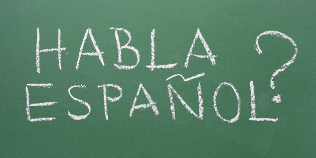
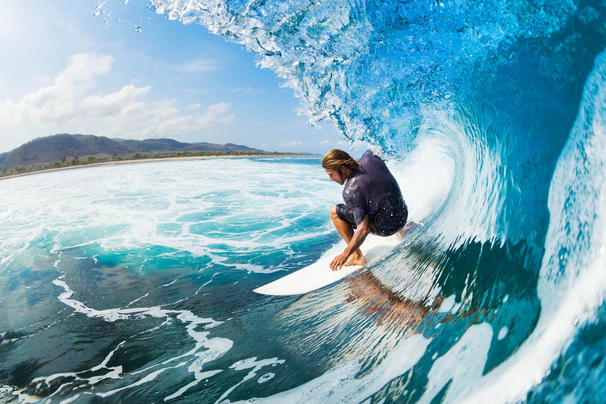
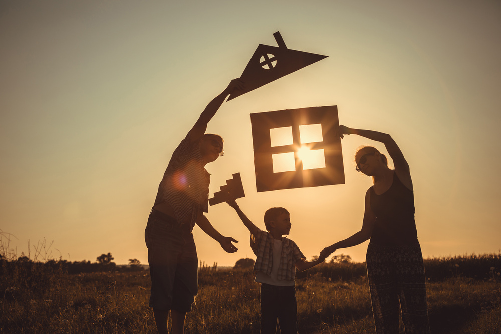
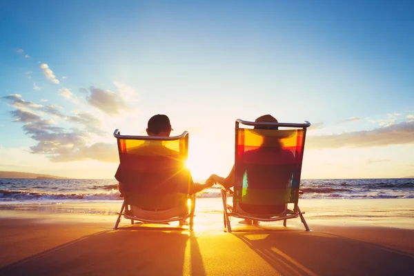
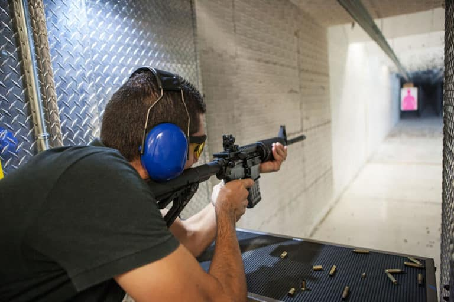
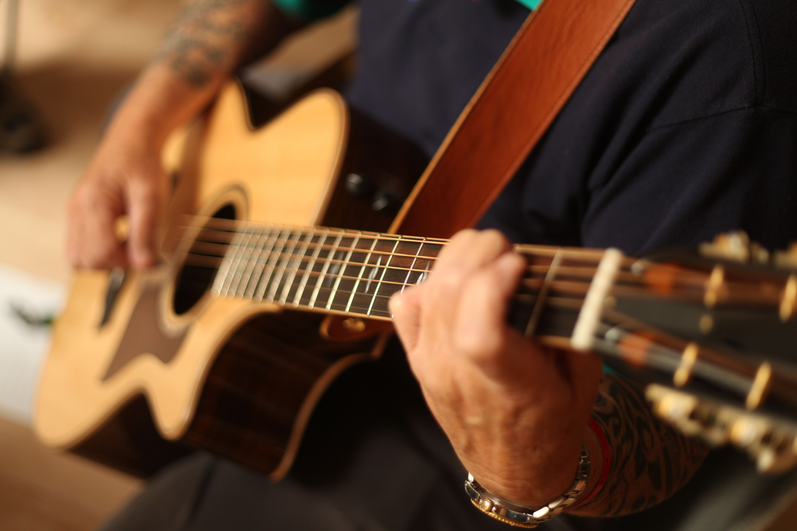

Learn and Speak Spanish
Learning Spanish has been a longstanding aspiration of mine. The richness of the language and its prevalence globally have always fascinated me. By mastering Spanish, I not only aim to broaden my communication skills but also to immerse myself in the diverse cultures where it's spoken. Being able to converse fluently in Spanish would not only enhance my personal experiences while traveling but also open up new opportunities for me in various aspects of life.

Experience Sky Diving
The idea of skydiving exhilarates me beyond measure. The adrenaline rush, the breathtaking views, and the sheer thrill of free-falling have always captivated my imagination. It's not just about conquering a fear or seeking an adrenaline fix; it's about pushing my limits, embracing the unknown, and feeling utterly alive in that moment of pure exhilaration. Experiencing skydiving is more than just checking off a bucket list item; it's about embracing the freedom and exhilaration that comes with defying gravity.

Experience Surfing
Surfing represents a harmonious blend of adventure, athleticism, and connection with nature that I've always yearned for. The thought of riding the waves, feeling the power of the ocean beneath me, and being in sync with the rhythm of the sea fills me with an indescribable sense of excitement. Beyond the thrill of catching that perfect wave, surfing embodies a lifestyle of mindfulness, respect for the environment, and a profound appreciation for the beauty of the ocean. It's not just about mastering a sport; it's about forging a deeper connection with the natural world and finding joy in the simple act of riding the waves.

Graduate from College
Surfing represents a harmonious blend of adventure, athleticism, and connection with nature that I've always yearned for. The thought of riding the waves, feeling the power of the ocean beneath me, and being in sync with the rhythm of the sea fills me with an indescribable sense of excitement. Beyond the thrill of catching that perfect wave, surfing embodies a lifestyle of mindfulness, respect for the environment, and a profound appreciation for the beauty of the ocean. It's not just about mastering a sport; it's about forging a deeper connection with the natural world and finding joy in the simple act of riding the waves.
Obtain a Stable Job
Finding a stable job is an essential step towards achieving financial independence and pursuing my career aspirations. It's not just about earning a paycheck; it's about finding meaningful work that aligns with my skills, values, and long-term goals. A stable job provides me with a sense of security, stability, and the opportunity to grow both personally and professionally. Beyond the monetary rewards, it offers a platform for me to make a positive impact, pursue my passions, and fulfill my potential in the workplace.

Build my Own Family
Building my own family is a deeply cherished dream that embodies love, companionship, and the joy of creating a supportive and nurturing environment. It's about finding a life partner with whom I can share my hopes, dreams, and aspirations, and together, embark on the journey of parenthood. Building a family is not just about blood ties; it's about creating bonds of love, trust, and respect that withstand the test of time. It's about creating a legacy of love, laughter, and cherished memories that enrich the lives of generations to come.

Retire in Peace
Retiring in peace is a goal that reflects my desire for financial security, emotional well-being, and a fulfilling retirement lifestyle. It's about achieving a sense of peace, contentment, and freedom to pursue my passions and interests without the constraints of work or financial worries. Retiring in peace means having the financial resources to enjoy life's simple pleasures, travel the world, and spend quality time with loved ones. It's about embracing the golden years with optimism, gratitude, and a sense of fulfillment for a life well-lived.

Shoot a live Firearm
Shooting a live firearm is an experience that I approach with a mix of curiosity, respect, and a desire to learn. Beyond the adrenaline rush and the thrill of firing a weapon, it's an opportunity to gain a deeper understanding of firearm safety, marksmanship, and the responsibility that comes with handling firearms. Shooting a live firearm is not about glorifying violence or promoting aggression; it's about honing my skills, fostering discipline, and gaining a newfound appreciation for the art and science of shooting sports.

Learn to Play a Guitar
My goal has always been to learn how to play the guitar, and it has been motivated by a variety of fundamental hobbies and personal reasons. My motivation to become skilled on this instrument is rooted on my natural passion for music and my deep understanding of its transformative potential. I see myself entering a domain of creative expression and healing emotion that is beyond words alone with each chord strummed and song plucked. Learning to play the guitar is going to be a tough but gratifying experience that will test my ability to overcome obstacles, accept failure as a necessary part of the learning process, and appreciate any advancement, no matter how small..
Go to Top